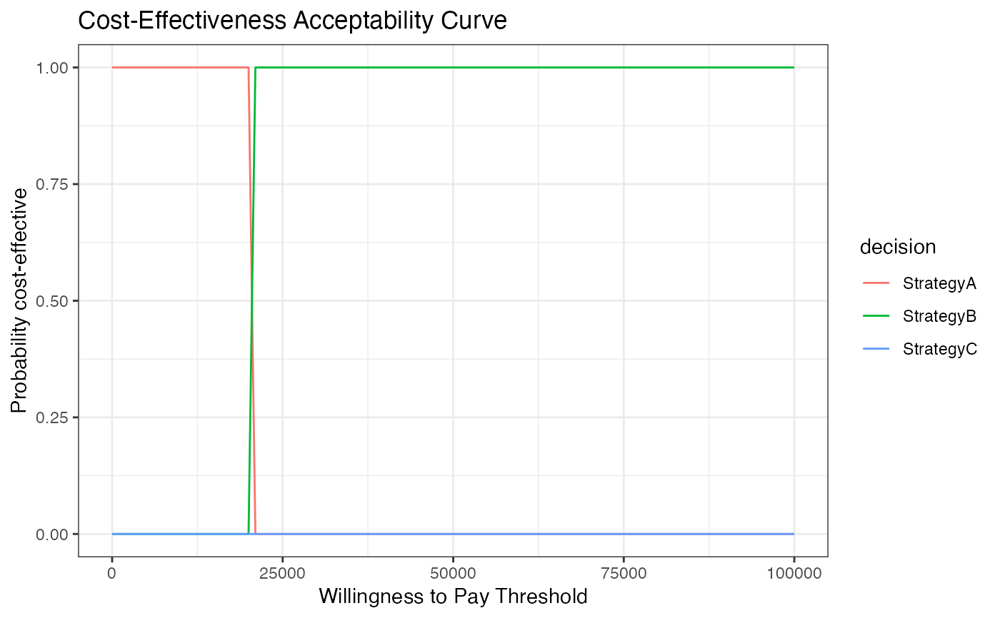

This function plots the Cost-Effectiveness Acceptability Curve (CEAC) for a set of strategies based on their costs and utilities.
Usage
plot_ceac(payoffs_sim, wtp_range, col_names = c("cost", "utility"))Arguments
- payoffs_sim
A 3D array containing the simulated payoffs. The dimensions should be decision, payoff (cost and utility), and simulation.
- wtp_range
A numeric vector specifying the range of willingness to pay (WTP) thresholds.
- col_names
A character vector specifying the names of the columns for cost and utility. Default is c("cost", "utility").
Examples
# Example payoffs simulation array
payoffs_sim <- array(
data = c(1000, 2000, 1500, 0.8, 0.85, 0.82, 1000, 2000, 1500, 0.8, 0.85, 0.82),
dim = c(3, 2, 2),
dimnames = list(c("StrategyA", "StrategyB", "StrategyC"), c("cost", "utility"), NULL)
)
# Define WTP range
wtp_range <- seq(0, 100000, by = 1000)
# Plot CEAC
ceac_plot <- plot_ceac(payoffs_sim, wtp_range)
print(ceac_plot)
